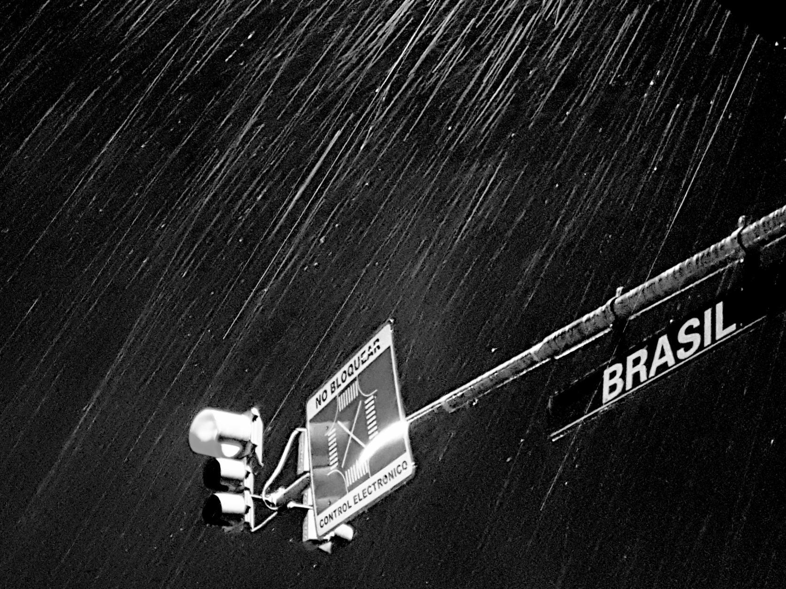
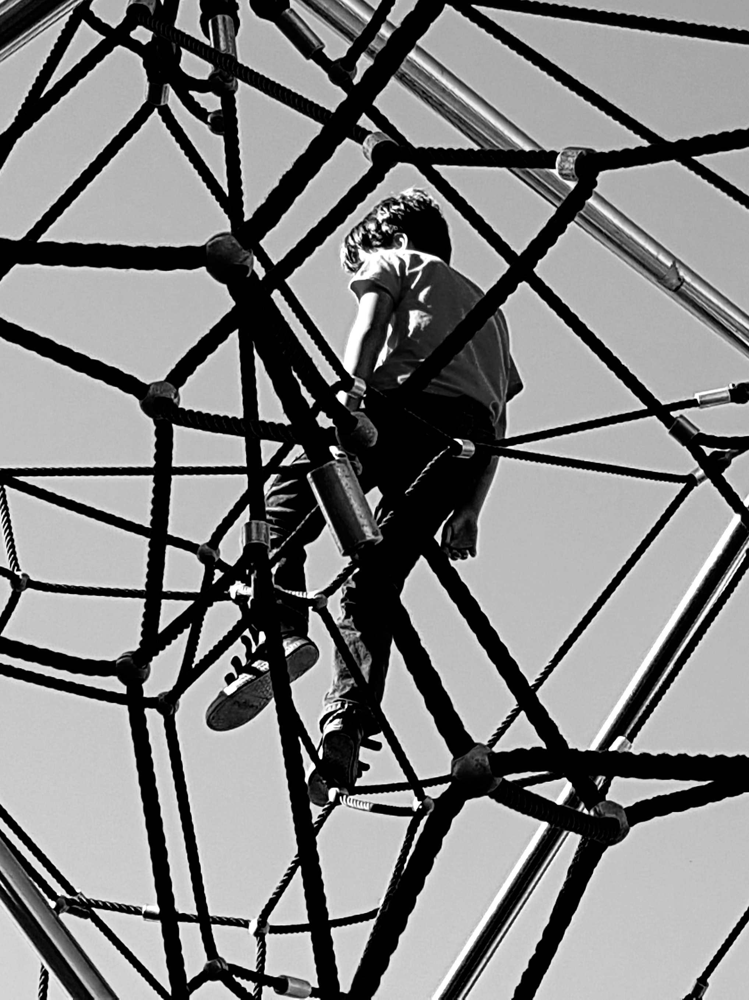
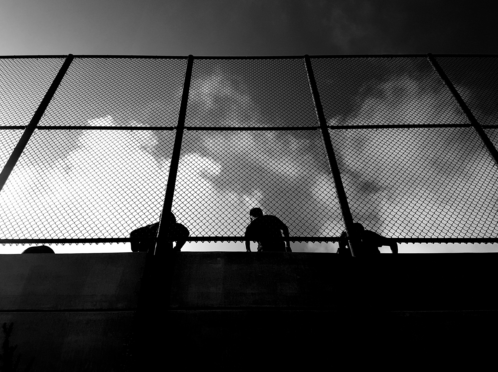

Photography · 2019
Black & white studies.
A black-and-white sequence from streets, weather, and structure.




Photography · 2019
A black-and-white sequence from streets, weather, and structure.


